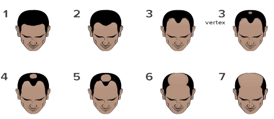

탈모 검사
아래의 버튼을 눌러 카메라를 실행합니다.

Good / Mild / Moderate / Severe
(양호 / 경증 / 보통 / 중증)
(양호 / 경증 / 보통 / 중증)
1단계 : 경미한 탈모 또는 정상
: Good / Good / Good / Good
2단계 : 관자놀이 헤어라인의 명확한 탈모
: Mild / Mild / Good / Good
3단계 : 치료가 필요한 단계로 정수리에 모발이 가늘어지고 헤어라인이 뒤로 후퇴된 탈모
: Moderate / Moderate / Good / Good
3단계 Vertex : 정수리가 명확해지고 헤어라인이 후퇴된 탈모
: Moderate / Moderate / Good / Mild
4단계 : 정수리와 헤어라인에서 더 큰 범위로 진행된 탈모
: Moderate / Moderate / Mild / Moderate
5단계 : 정수리와 헤어라인 쪽 탈모 범위가 더 커졌으나 그 사이 경계에 머리는 남아있는 상태
: Moderate / Moderate / Moderate / Moderate
6단계 : 정수리와 헤어라인 사이 경계가 사라졌으나 잔모발은 남아 있는 상태
: Severe / Severe / Moderate / Moderate
7단계 : 가장 심각한 형태의 탈모. 전두부, 정수리 부근의 머리가 거의 없는 상태
: Severe / Severe / Severe / Severe